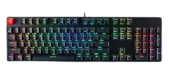

Keyboard
Keyboard คืออะไร
แป้นพิมพ์เป็นหนึ่งในอุปกรณ์ป้อนข้อมูลหลักที่ใช้กับคอมพิวเตอร์ เช่นเดียวกับเครื่องพิมพ์ดีดไฟฟ้า แป้นพิมพ์ประกอบด้วยปุ่มสำหรับสร้างตัวอักษร ตัวเลข และสัญลักษณ์ และทำหน้าที่เพิ่มเติม ส่วนต่อไปนี้ให้ข้อมูลเชิงลึกเพิ่มเติมและคำตอบสำหรับคำถามที่พบบ่อยเกี่ยวกับแป้นพิมพ์
Keyboard มีหน้าที่ทำอะไร
แป้นพิมพ์คอมพิวเตอร์เป็นอุปกรณ์ป้อนข้อมูลที่ใช้ในการป้อนอักขระและฟังก์ชั่นเข้าสู่ระบบคอมพิวเตอร์โดยการกดปุ่มหรือแป้นต่างๆ เป็นอุปกรณ์หลักที่ใช้ในการป้อนข้อความ โดยทั่วไปแป้นพิมพ์ประกอบด้วยปุ่มสำหรับตัวอักษร ตัวเลข และอักขระพิเศษแต่ละตัว รวมถึงปุ่มสำหรับฟังก์ชันเฉพาะ แป้นพิมพ์เชื่อมต่อกับระบบคอมพิวเตอร์โดยใช้สายเคเบิลหรือการเชื่อมต่อไร้สาย
ประวัติของ Keyboard
คีย์บอร์ด Qwerty ที่เราใช้ในปัจจุบันเป็นของ Christoper Latham Sholes นักประดิษฐ์ชาวอเมริกันรายนี้แสดงคีย์บอร์ดครั้งแรกเมื่อวันที่ 1 กรกฎาคม พ.ศ. 2417 Sholes จัดเค้าโครงดั้งเดิมตามตัวอักษร อย่างไรก็ตาม รูปแบบแรกนี้อนุญาตให้พิมพ์การผสมตัวอักษรทั่วไปเร็วเกินไป และทำให้ปุ่มค้าง หลังจากการตระหนักรู้นี้ Sholes ได้สร้างดีไซน์ Qwerty ใหม่เพื่อป้องกันไม่ให้ตัวอักษรที่ใช้กันทั่วไปติดกัน
